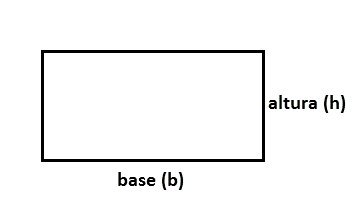
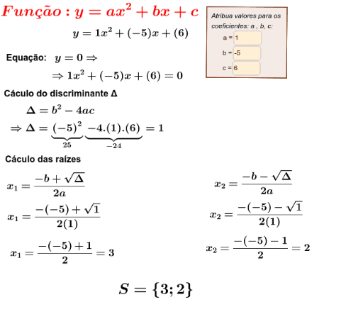
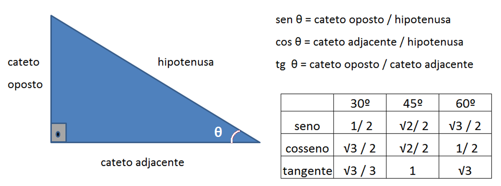
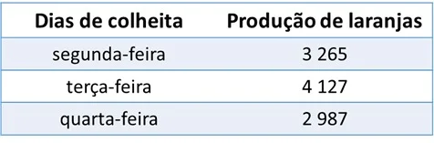

Áreas de figuras geométricas
Retângulo
A = b . h
Triângulo

A = b . h / 2
Círculo

A = π . r 2
Equação de 2° Grau
A primeira coisa a fazer é entender que uma equação de segundo grau é representada assim: y = a.x 2 + b.x + c. Vale lembrar que temos “a”, “b” e “c” para identificarmos na expressão de segundo grau.
Fórmula de Bháskra:
Δ = b 2 – 4.a.c
Relações trigonométricas
As fórmulas utilizadas para encontrar os valores das razões trigonométricas são simples. Veja abaixo:
Seno = cateto oposto / hipotenusa
Cosseno = cateto adjacente / hipotenusa
Tangente = cateto oposto / cateto adjacente
Juros
A fórmula para saber o valor de juros simples é assim:

J = C . i . t
Nesse caso, o “J” é o valor de juros que você vai precisar descobrir, “C” é o capital, que é a forma como o valor inicial é chamado, “i” é a taxa de juros e o “t” representa o tempo.
Exercício 1
Na fazenda do professor Mário são produzidas laranjas. Assim que começou o período da colheita, uma grande produção já foi contabilizada. A tabela abaixo mostra a produção nos três primeiros dias.
a) Qual a produção total nos três primeiros dias?
Resposta: 3265 + 4127 + 2987 = 10379O total da produção nos três dias foi de 10 379 laranjas.
b) De quanto foi a queda na produção entre o dia de maior e menor produção?
O dia de maior produção foi terça-feira, com 4 127 laranjas e, o de menor produção foi quarta-feira, com 2 987 laranjas. A diferença é o resultado da subtração entre estes valores.
Resposta: 4127-2987= 1140Da terça-feira para quarta-feira houve uma queda na produção de 1 140 laranjas.
Exercício 2
Em um campeonato esportivo, 80 crianças se inscreveram para participar das atividades fisícas. De modo a organizarem os jogos e atividades, eles verificaram a faixa etária dos inscritos e constataram que 2/5 das crianças têm mais de doze anos. Quantos participantes tem menos que 12 anos?
Resposta: Se 2/5 das crianças têm mais de 12 anos, 3/5 têm menos de 12 anos, pois:
Para calcular quanto é 3/5 de 80, fazemos:
Resposta: Desta forma, 48 crianças têm menos de 12 anos.
Exercício 3
O Planeta Terra possui um raio de cerca de 6 371 km. Se considerarmos a Terra como uma esfera perfeita qual o comprimento de sua circunferência. Considere pi igual a 3,14.

Resposta:
O comprimento de uma circunferência é calculado pela relação:
C = 2. π. r
Substituindo os valores, temos:
C = 2 . 3,14 . 6 371 km
C = 40 009,88 km
Este é um valor aproximado pois, o número pi é irracional, por isso possui infinitas casas decimais e, estamos considerando apenas as duas primeiras casas após a vírgula.